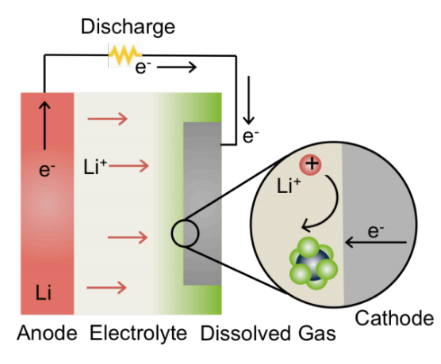
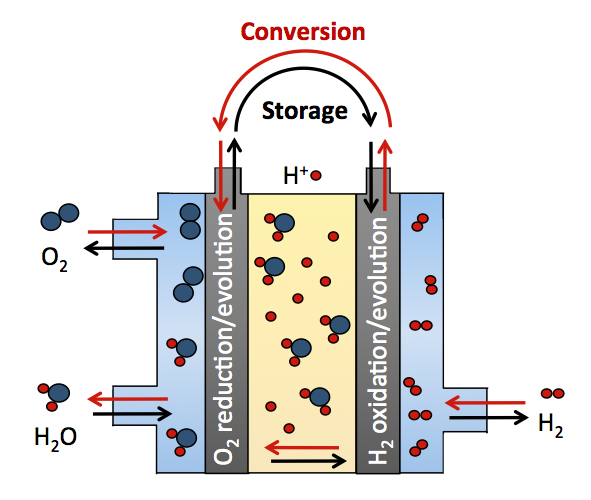
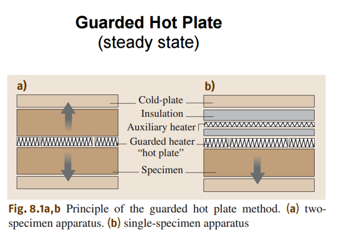

Research
|  | Prof. Gallant's GroupUndergraduate Reseacher (UROP): Fall 2016 - Present The goal of this project is to design a high temperature, solid state device for the electrochemical conversion of NOx and SO2. It will investigate several novel electrochemical pathways for gas-to-solid destruction of harmful gases. We are interested in the destruction of these gases using Li metal, leading to the formation of Li2Ox (s) and benign N2 (g) or S (s) products. Fundamental reaction pathways will be analyzed using a variety of electrochemical experiments and measurement techniques. This research is ongoing. |
|
|  |
MIT Electrochemical Energy Lab (EEL)Undergraduate Reseacher (UROP): Summer 2015 - Spring 2016 Over the summer and into the present school year, I've been conducting research in the MIT Electrochemical Energy Lab with Professor Shao-Horn. I've developed new supporting materials for battery applications and conducted research into catalysis. I've synthesized a series of TiO2 and SnO2 nanomaterials doped with Nb, F, and other elements. We also synthesized a series of other mesoporous and amorphous transition metal oxides for catalysis work. The oxides were developed such that they had high surface area and high conductivity, following goals set forward by our partners at BASF. They were characterized using TEM, XRD, and BET techniques. Those oxides with sufficient surface area were tested for conductivity as well as stability and capacitance through the three electrode process, and I analyzed the resulting data in EC-Lab and OriginPro. Some of my results have been written up and submitted for publishing (regarding the electrochemical properties of Li2RuO2 and several other metal oxides). I am continuing this research into my sophomore year at MIT. The work I have done this summer has taught me a lot about electrochemistry, electrochemical techniques, and the internal mechanisms of batteries and fuel cells. | |
|  | MIT Grossman GroupUndergraduate Reseacher (UROP): Winter 2014 - Spring 2016 I've had hands-on research experience in the MIT Grossman Group over the past year as well. I designed and built a novel tool to determine the thermal conductivity [TK] of concrete disks with various additives in them (graphene, coal, graphite, carbon black, etc.). I built this measurement device by looking at various other TK devices in the literature, and combining their best aspects. The device utilizes peltier coolers, heating pads, thermocouples, and arduinos to calculate and plot the TK by finding the heat flux through the disks and the equilibrium temperature reached. I worked with Nicola Ferralis, a research scientist in our group. We are currently testing various concrete disks and are in contact with people from the cement industry to see where this research could take us. We are also pursuing a research paper and looking into the possibility of IP for the device. This has a wide range of uses in building materials as well as in geothermal energy. I am also researching the corrosion properties of graphene coated copper in a basic solution, for use in analyzing the corrosion properties of carbonaceous cement under real-life scenarios. |